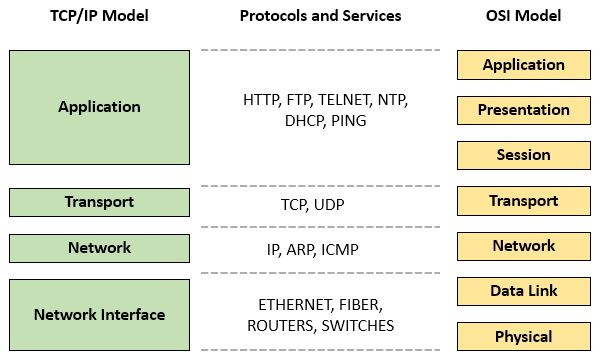

Interacting with the World throughout the Internet
Nowadays, the Internet appears everywhere and distributes the number of utilities for citizens in every aspect of living. To master Computer Science and give the opportunity for future jobs, we must grasp general bits of knowledge. Comprehending the Internet is so necessary and extremely important for all developers.
The final project namely "Interacting with the world throughout the Internet" helps you improve awareness about how the Internet works, the structure of the Internet and its applications, especially the World Wide Web. We not only provide professional theories but also apply them to generate a demo Website.
Our report includes 3 main parts:
- Computer Networks
- The Internet
- The World Wide Web
Noticeably, we use the TCP/IP model instead of the OSI model
To view our slide and final report, please enter below buttons: